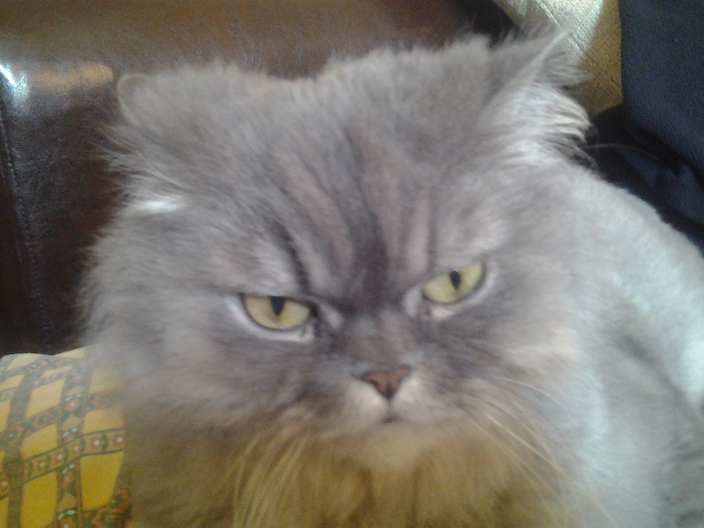

Делюсь рассказом о своем любимом коте по имени Тимон. Он прожил у меня всю свою длинную жизнь. Был брутален, серьезен и всегда спал.
Тимон - это необыкновенный кот с уникальным характером. Он всегда давал отпор при посегательстве на его территорию. Даже если это не его территория)
Хоть он и идельный охранник, птициы на него покушались постоянно. А что самое удивительное - они держали его в страхе!
Ничего лучше вы уже не увидете, но вот еще фото котов: тык.